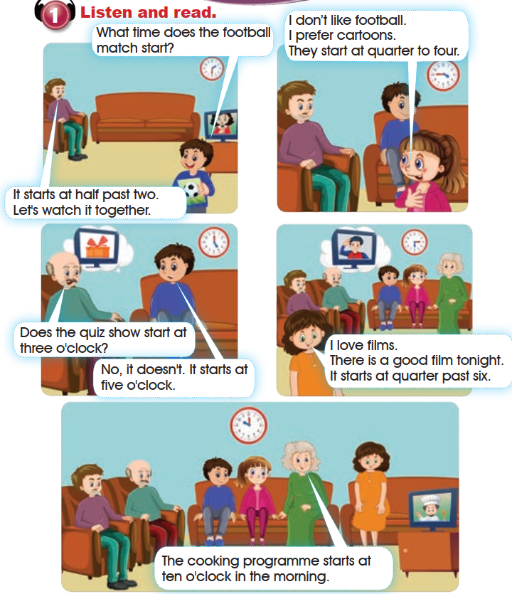
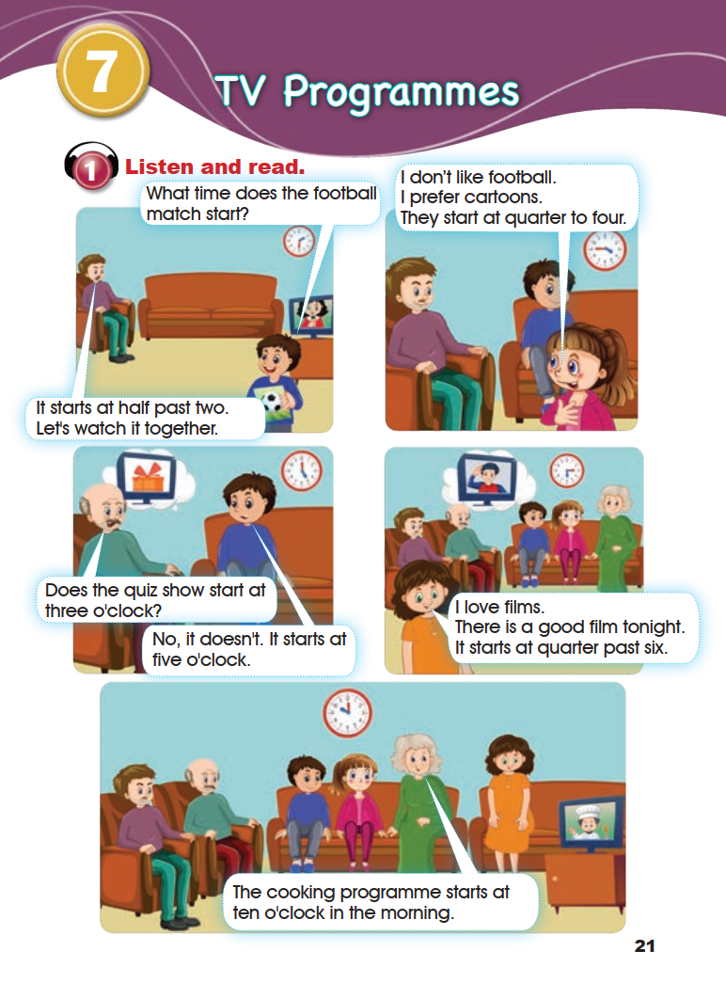
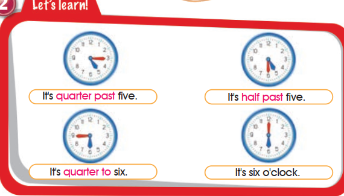
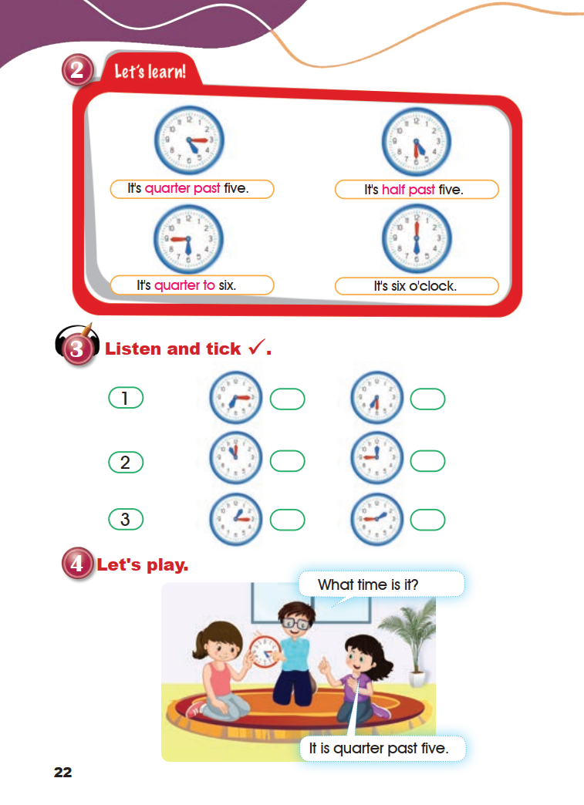
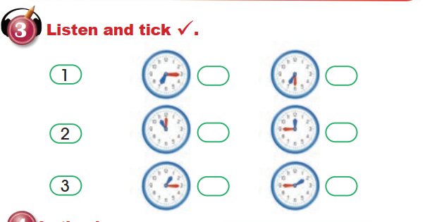
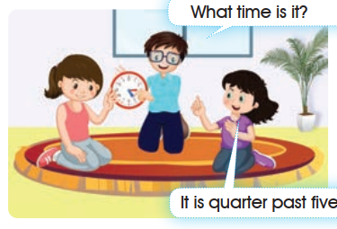
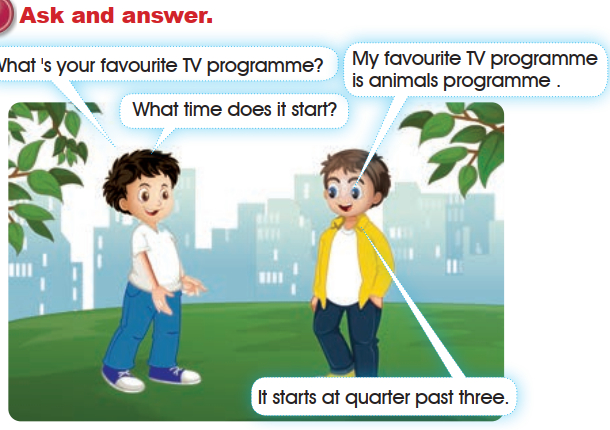
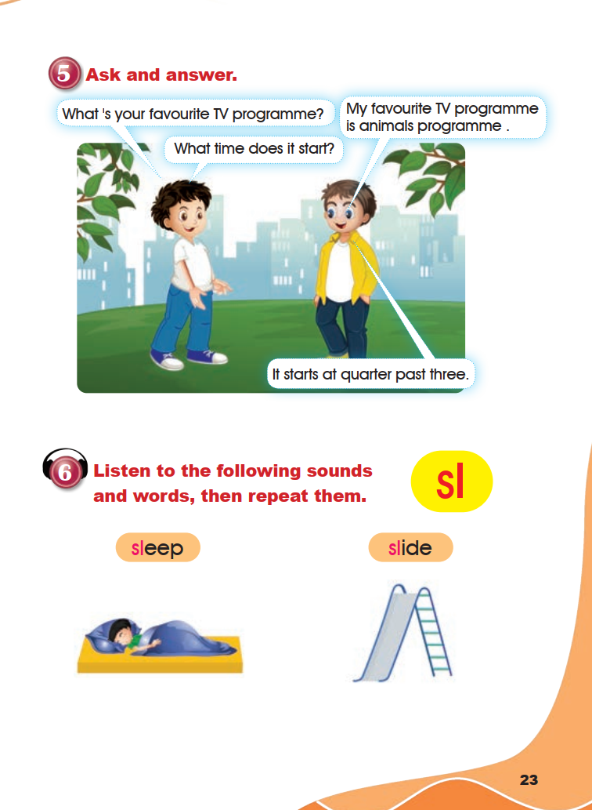
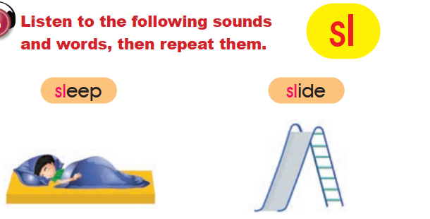

Pupil’s Book
TV Programmes · Pupil’s Book · pages 21–23. All six printed activities are kept in source order.
1. Listen and read.

Speech bubbles from the picture story. Read them aloud or listen to the recording when it is available.
Audio exception. The recording was not supplied, so the dialogue is shown as printed and nothing is checked on screen.
What time does the football match start?
It starts at half past two. Let’s watch it together.
I don’t like football. I prefer cartoons. They start at quarter to four.
Does the quiz show start at three o’clock?
No, it doesn’t. It starts at five o’clock.
I love films. There is a good film tonight. It starts at quarter past six.
The cooking programme starts at ten o’clock in the morning.
Open the source page · Pupil’s Book · p. 21
The original supplied scan, unchanged.

2. Let’s learn!

The four clock pictures show the time named under each one. The highlighted words are the time phrases to learn.
It’s quarter past five.
It’s half past five.
It’s quarter to six.
It’s six o’clock.
Open the source page · Pupil’s Book · p. 22
The original supplied scan, unchanged.

3. Listen and tick ✓.

Three numbered rows, each with two clock pictures and one tick circle per clock.
Audio exception. This activity depends on the recording, which was not supplied. The clock pictures are reproduced, but no ticks are given and nothing is checked on screen.
Open the source page · Pupil’s Book · p. 22
The original supplied scan, unchanged.
4. Let’s play.

A speaking game. Pupils ask and answer, using a clock if one is available. Nothing is graded.
What time is it?
It is quarter past five.
Open the source page · Pupil’s Book · p. 22
The original supplied scan, unchanged.
5. Ask and answer.

Spacing before the apostrophe and before the full stop is kept as printed. The printed model answer is the reply about the programme and its start time.
What ’s your favourite TV programme?
What time does it start?
My favourite TV programme is animals programme .
It starts at quarter past three.
Open the source page · Pupil’s Book · p. 23
The original supplied scan, unchanged.

6. Listen to the following sounds and words, then repeat them.

The sound sl with the words sleep and slide, and their pictures.
Audio exception. The sound and the repetition depend on the recording, which was not supplied. The printed sound and words are listed here.
Sound: sl
sleep · slide
Open the source page · Pupil’s Book · p. 23
The original supplied scan, unchanged.